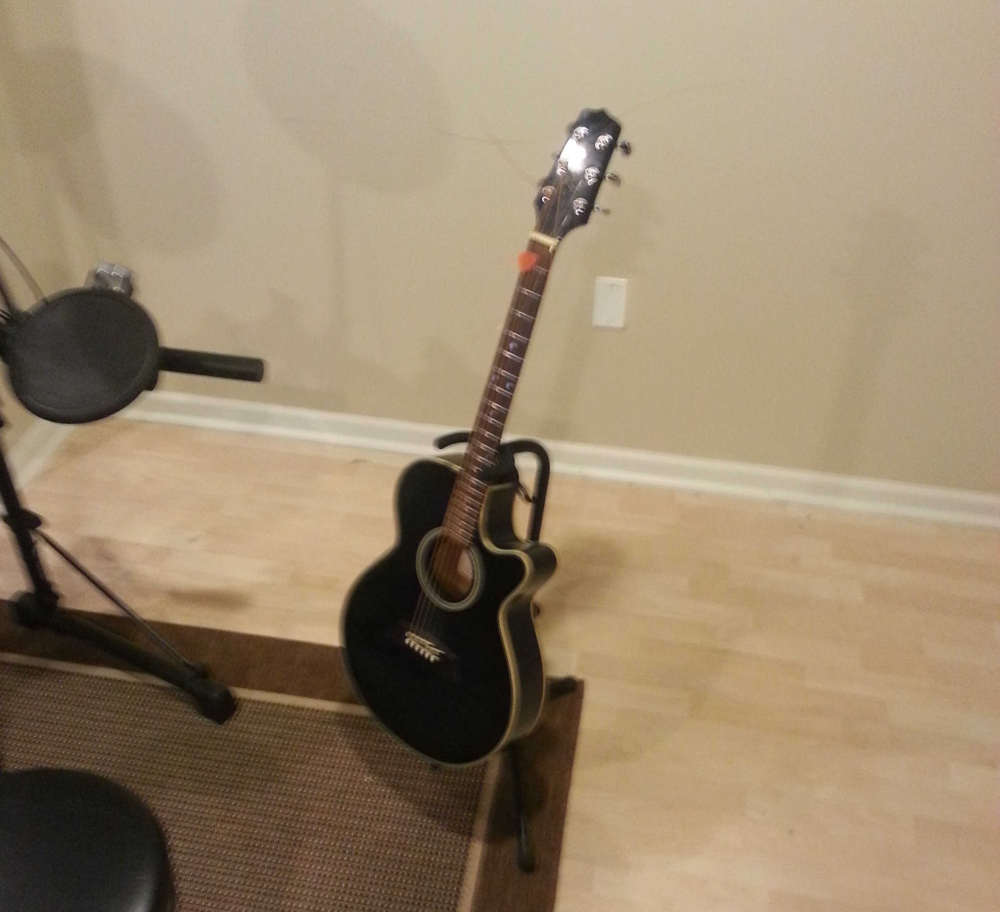

Welcome to Lintel Studio
This is Lintel Studio, where I teach and record music. I believe teaching and recording compliment each other. Listening to recordings of a performance lets the performer hear the details (i.e., timing, phrasing, "feel", etc.) that are hard to notice while performing but are essential to play an instrument.
 My teaching style relies on developing
a "good ear"; being able to hear the essential components
of music and improvise if necessary. Improvisational music
can rely on elements of compositional and vice versa, and I enjoy
teaching both.
My recording style relies heavily on digital technology.
Recording tools such as
Varispeed,
Flex Time,
and
Flex Pitch
offer MIDI-like total control of traditional instruments. Total control
of the performance fascillitates creative composition and experimentation,
but most importantly limits frustration.
My teaching style relies on developing
a "good ear"; being able to hear the essential components
of music and improvise if necessary. Improvisational music
can rely on elements of compositional and vice versa, and I enjoy
teaching both.
My recording style relies heavily on digital technology.
Recording tools such as
Varispeed,
Flex Time,
and
Flex Pitch
offer MIDI-like total control of traditional instruments. Total control
of the performance fascillitates creative composition and experimentation,
but most importantly limits frustration.
Digital recording technology also provides a fantastic cost-to-performance ratio. I have (nearly, ;) achieved professional quality results on a wide-range of musical genres with minimal time and effort using my current recording setup.
The studio's main tool is Apple's Logic Pro 9 Digital Audio Workstation (DAW).

(see these examples). The only "real" instruments on these tracks are the electric guitars:



 or
Jam Origins MIDI Guitar software controller.>
or
Jam Origins MIDI Guitar software controller.>
Drum and percussion recording is performed using a Roland V-Drum kit
and Toontrack's Superior Drummer 2.0.
contact: jasonlarkin84 gmail com